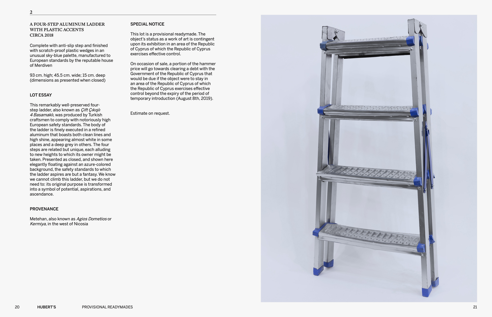
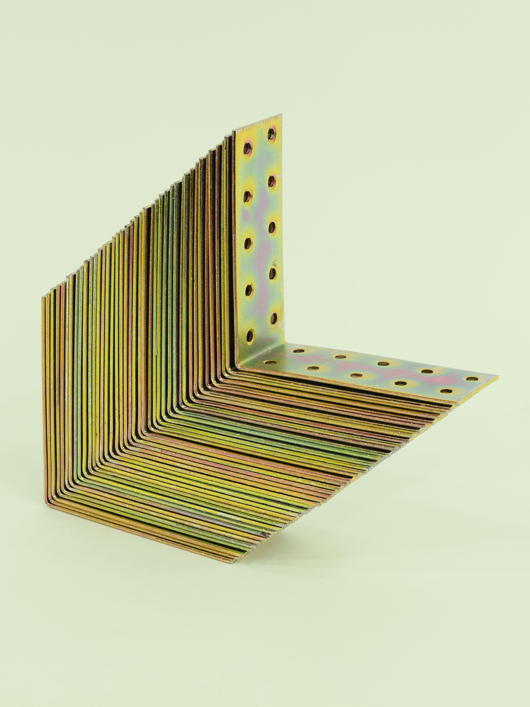
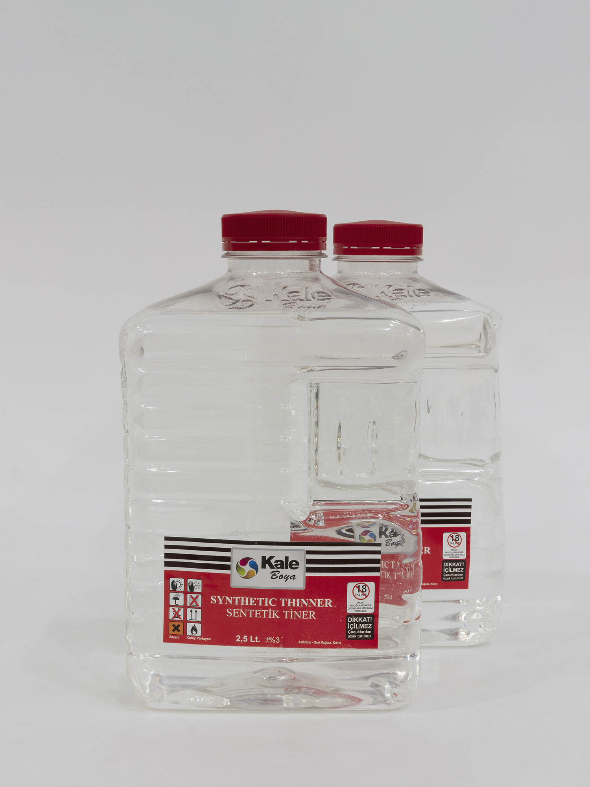

◟◝
Provisional Readymades
Exit Strategy, 2019
NeMe Arts Centre, Limassol, Cyprus
Support: Cyprus University of Technology, The Island Club, U.S. Fulbright Fellowship
Provisional Readymades
Exit Strategy, 2019
NeMe Arts Centre, Limassol, Cyprus
Support: Cyprus University of Technology, The Island Club, U.S. Fulbright Fellowship

Provisional Readymades takes up the temporal structure of the exhibition to temporarily introduce goods from Turkish-occupied northern Cyprus into the sovereign Republic of Cyprus. In accordance with the procedures enumerated by European Council Regulation No. 866/2004, which establishes special rules for those areas of Cyprus “temporarily outside the area of freedom, justice and security,” the goods were accompanied by an auction catalogue “providing reasonable evidence” of their intended exhibition.
After their mandatory exhibition period at the NeMe Arts Centre in Limassol (Republic of Cyprus), the objects were placed on long-term loan to S.N.K. Venus Home Developers Ltd (liquidated 2011) in Pyla, a bicommunal village located in the United Nations buffer zone.
Excerpts from auction catalogue:







